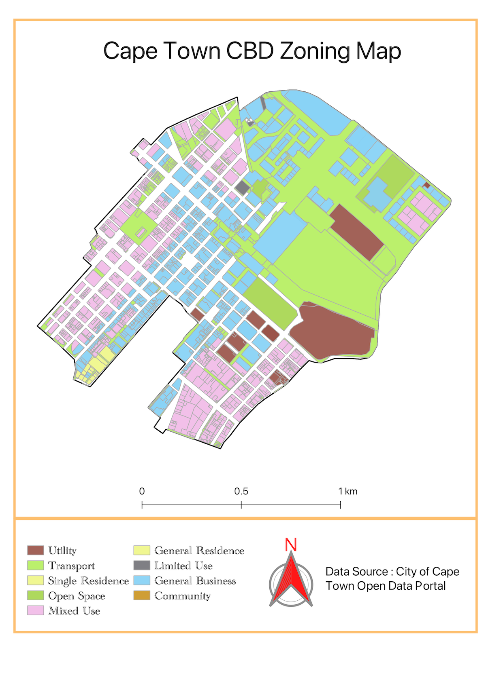
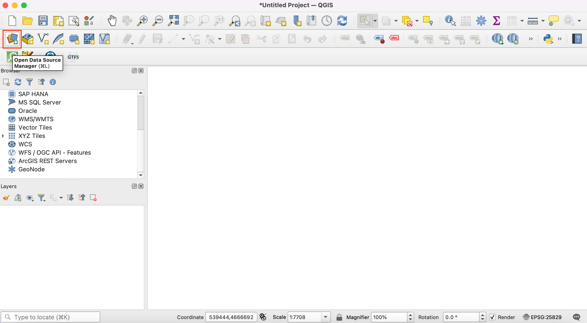
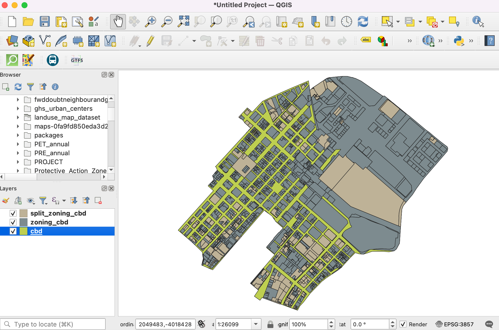
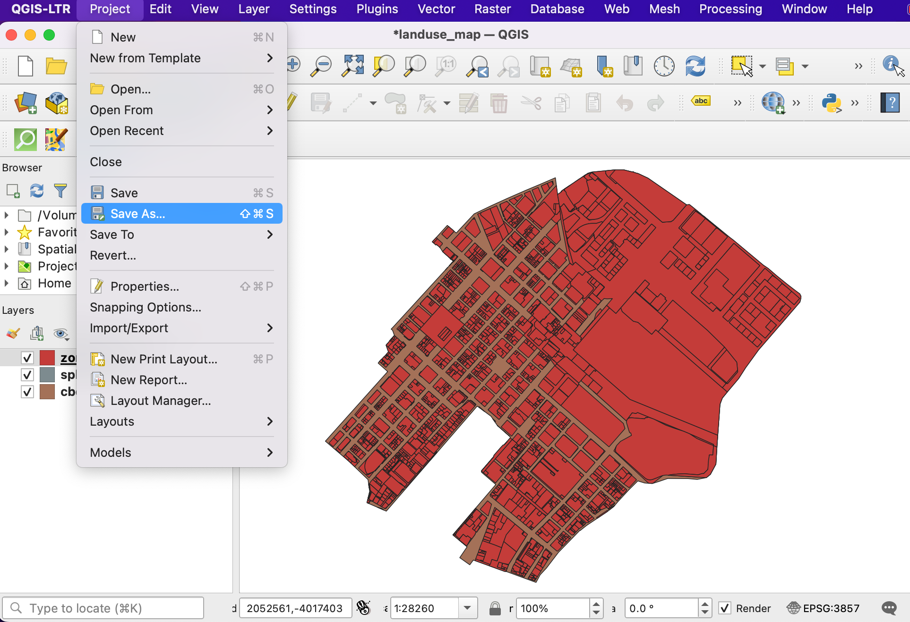
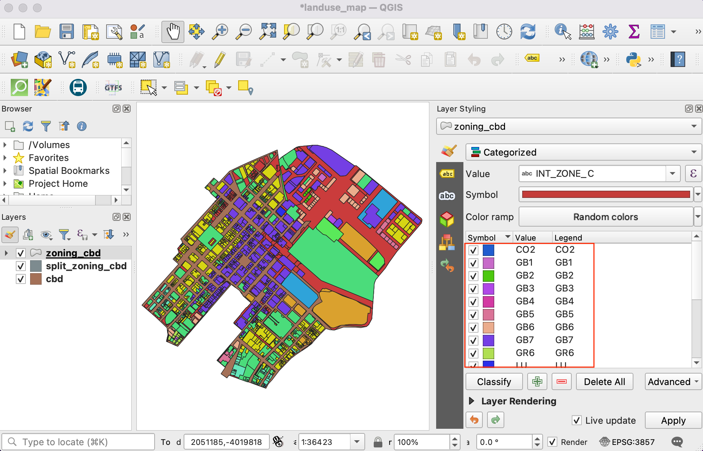
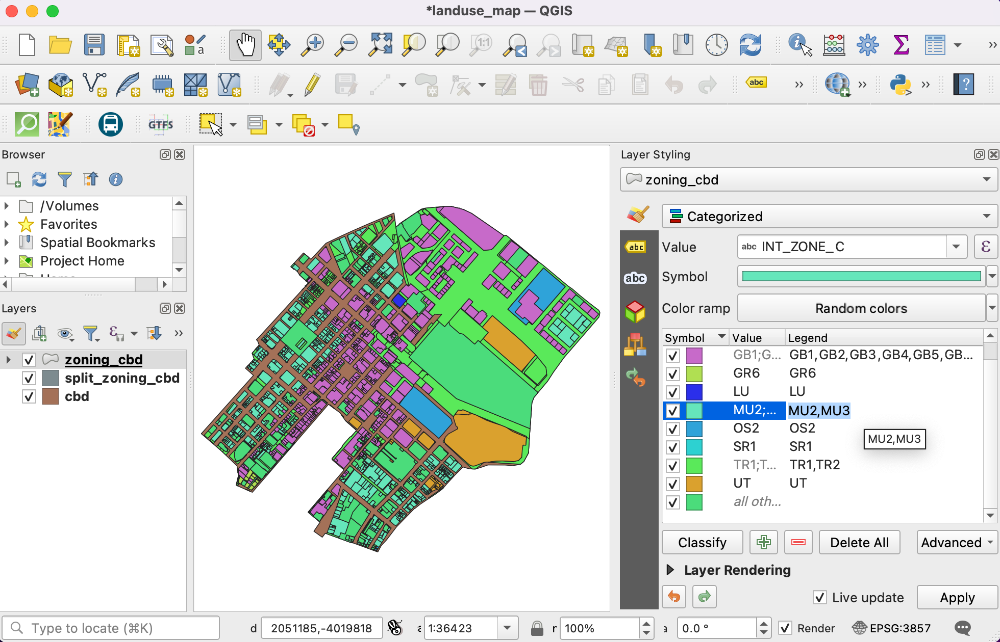
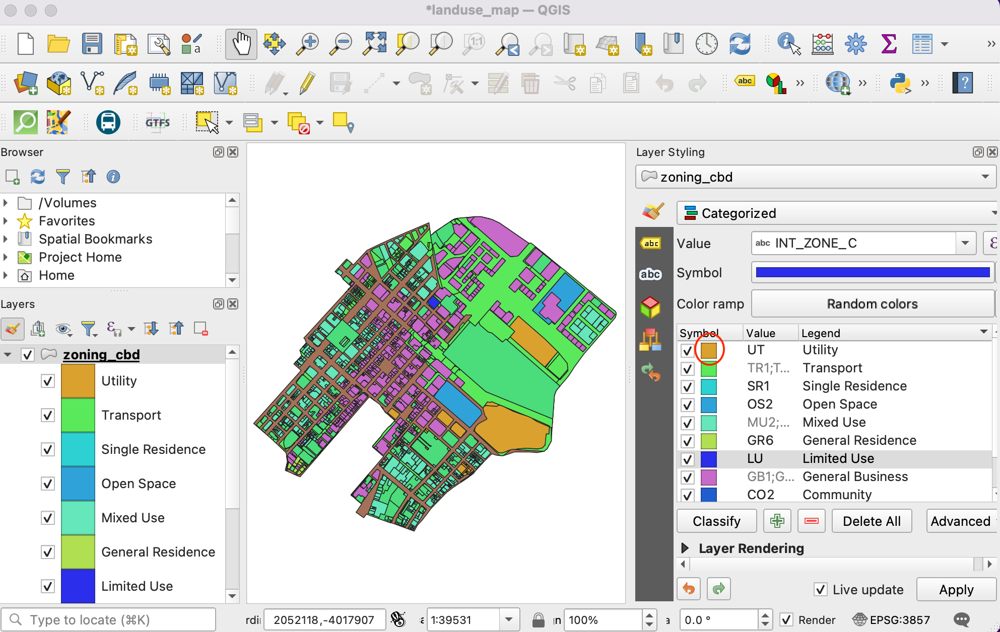
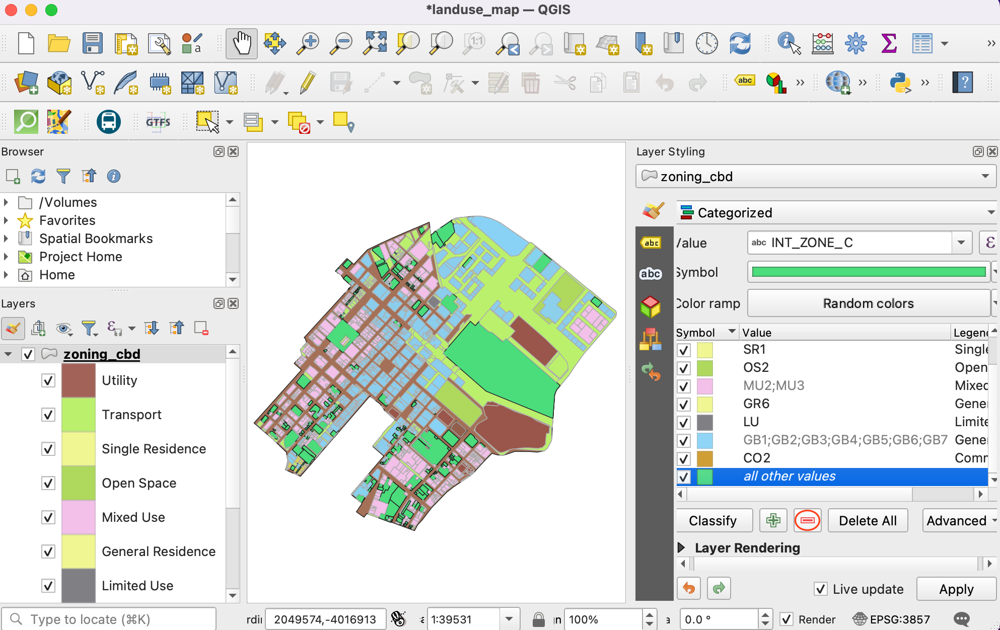
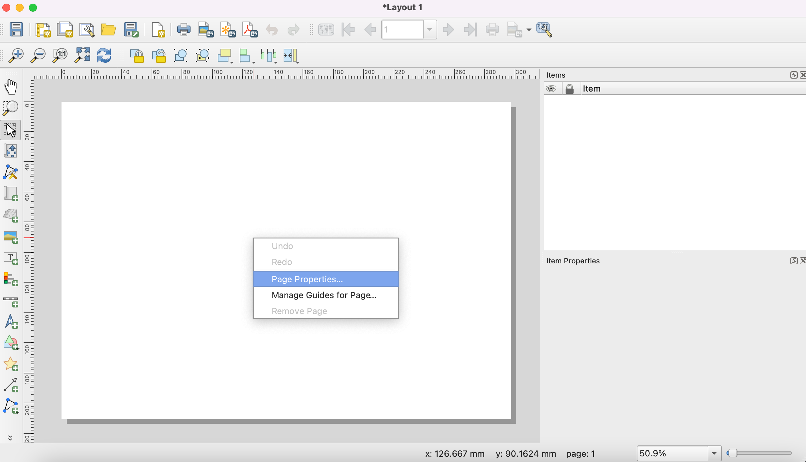

Ujaval Gandhi
Ujaval GandhiEen kaart voor gebruik van land maken (QGIS3)¶
Zoneren van bestemmingen definiëren en reguleren welk soort gebruikers op bepaalde percelen zijn toegelaten en ontwerp van omtrek en vereisten voor ontwikkeling en richtlijnen. In deze handleiding zult u leren hoe toegang te krijgen tot gegevenssets van percelen, ze opmaken conform hun attributen voor de zonering en een kaart maken.
Overzicht van de taak¶
U zult werken met een gegevensset voor percelen land met informatie over de zonering en een kaart maken die het patroon voor de zonering weergeeft in de regio CBD van Kaapstad.

Andere vaardigheden die u zult leren¶
Hoe toegang te krijgen tot en downloaden van de gegevens van ArcGIS REST in QGIS.
Hoe objecten uit te nemen uit ene laag die kruist met een laag met grenzen.
Hoe de verschillende sub-categorieën samen te voegen uit de renderer Categoriën.
De gegevens ophalen¶
U vindt de gegevens voor de handleiding op het Cape Town Open Data Portal - https://odp-cctegis.opendata.arcgis.com. We zullen de gegevens vanaf het portaal importeren met de ArcGIS REST server-URL en zullen de drie lagen voorbereiden die hieronder vermeld zijn.
Laag Zonering: Een polygoon shapefile met code voor de zonering en beschrijvingen voor percelen land die één enkele zone hebben - geclipt tot het gebied Kaapstad CBD.
Gesplitste laag zonering: Een polygoon shapefile met code voor de zonering en beschrijvingen voor percelen land die meerdere zones hebben multiple - met elke polygoon gesplitst in polygonen voor één enkele zone.
Gebied Kaapstad CDB: Een polygoon die het gebied Kaapstad CBD markeert.
Laten we stapsgewijze kijken om de gegevensset voor te bereiden voor deze handleiding.
Ga naar het Data Portal - https://odp-cctegis.opendata.arcgis.com/. We zullen zoeken naar de gegevens voor Cape Town CBD in de zoekbalk en klikken om verder te bladeren.

Klik op Volledige details bekijken om beschikbare services te verkennen om de gegevens op te halen.

Scroll down to find View Data Source and click on the it.

Ga, in de ArcGIS REST Services Directory , naar Home en kopieer de URL van die pagina. De gekopieerde URL ziet er ongeveer zo uit - https://citymaps.capetown.gov.za/agsext1/rest/services.

Open nu QGIS en klik op .
De lijst met databronnen staat in het linkerpaneel. Scroll naar beneden naar . Klik op Nieuw om een nieuwe verbinding naar de server te maken.

In the Connection Details, give the Name
Cape Town Open Data Portaland paste the copied url as an input for URL.
Klik op OK en dan op Verbinden om de mappen met gegevens te zien die beschikbaar zijn op de server.

Nu zullen we zoeken naar alle drie vereiste lagen voor de handleiding uit de database. Eerst zullen we openen de laag
Cape Town CBDin QGIS. Vergroot mappen om naar de lagen te bladeren. Het volledige pad naar de laag is . Selecteer de laag en klik op Toevoegen.
Sluit om te zien dat de laag is toegevoegd in QGIS. Klik op om de laag in het kaartvenster te centreren en weer te geven.

Nu zullen we met Databronnen beheren de laag
Zoningtoevoegen. Verbindmet hetCape Town Open Data Portalen blader naar de laagZoning. Het volledige pad is . Dit is een hele grote laag, zorg er dus voor het keuzevak Alleen objecten bevragen die het huidige zichtbare bereik overlappen te selecteren om te vermijden dat alle objecten op de laag geladen worden. Als u dit vergeet, zou het laden van de laag heel lang kunnen duren. Klik op Toevoegen om hem te openen in QGIS.
Voeg op soortgelijke wijze de laag
Split_Zoningtoe. Het volledige pad is - .
We kunnen nu zien dat alle drie lagen zijn geopend in QGIS. We willen de lagen
ZoningenSplit Zoningclippen naar de laag met de grenzen vanCape Town CBD. Laten we eerst alle drie lagen lokaal opslaan als shapefiles. Klik met rechts op de laagCape Town CBD. Zoek naar Exporteren en klik op Objecten opslaan als.
Stel de indeling in op ESRI Shapefile en blader naar de lokale map waar u de shapefiles wilt opslaan. We zullen alle aan deze handleiding gerelateerde lagen opslaan in één enkele map. Sla de laag op als
cbd. Behoud alle andere opties op hun standaard en klik op OK. Exporteer op soortgelijke wijze ook de twee andere lagen alsZoning.shpenSplit Zoningnaar dezelfde map.
Verwijder de lagen die zijn lagen vanaf de server. Selecteer alle drie lagen en klik op het pictogram Laag/Groep verwijderen. We zullen de objecten uitnemen uit de lagen
ZoningenSplit Zoning, die kruisen met de grens vancbd.
Ga naar op de menubalk.

In de Toolbox, zoek naar het algoritme Kruising en dubbelklik erop om het te openen.

Selecteer
Zoningals Invoerlaag encbdals Overlay-laag. Laat de andere opties op hun standaard staan en sla de uitvoer op naar een bestand.
Sla de uitvoerlaag op als
zoning_cbdin de map met de gegevens en klik op Uitvoeren.
Afhankelijk van de instelling van uw Processing, zult u enkele fouten of waarschuwingen zien weergegeven op de tab Log. De invoerlaag heeft enkele ongeldige geometrieën en die worden overgeslagen bij het uitvoeren van Kruising. We zullen geometrieën van de lagen
ZoningenSplit Zoningrepareren, voordat we Kruising alle geometrieën laten uitnemen.
Verwijder de uitvoer van Kruising uit QGIS en de map met gegevens. Zoek naar het gereedschap tool in de Toolbox van Processing. Dubbelklik erop om het te openen.

Selecteer
Zoningals Invoerlaag. Laat alle andere invoer op hun standaard en sla de uitvoerlaag op alszoning_fixed.shpin de map met gegevens door te klikken op Save to File. Klik op Uitvoeren. Herhaal het proces voor het repareren van de geometrieën voor de laagSplit Zoningen sla de laag met gerepareerde geometrieën op alssplit_zoning_fixed.shp.
Verwijder de lagen
ZoningenSplit Zoning. We zullen doorgaan met de uitgenomen objecten in de lagenzoning_fixedensplit_zoning_fixeddie kruisen metcbd. Zoek naarr in de Toolbox van Processing en dubbelklik om het te openen.
24.Select Zoning_fixed as Input layer and cbd as Overlay layer to perform intersection as described in steps 18 and 19. Save the output as zoning_cbd and repeat the same for split_zoning_fixed layer and save the output layer as split_zoning_cbd.

Voor het gemak kunt u direct een kopie van alle drie vooraf verwerkte lagen downloaden vanaf de links hieronder:
Procedure¶
Open QGIS. Klik op het pictogram om de lagen toe te voegen om in de handleiding mee te werken.

Schakel naar de tab Vector en gebruik de knop Bladeren om naar de map te navigeren waar u de verwerkte shapefiles hebt opgeslagen.

Selecteer de bestanden
cbd.shp,zoning_cbd.shpensplit_zoning_cbd.shpen klik op Openen.

U zult alle drie bestandspaden zien in het tekstvak naast Vectordatabron(nen). Klik op Toevoegen, gevolgd door Sluiten.

Het is belangrijk om uw werk op te slaan gedurende het werken aan de oefening. Ga naar .

Sla het project op in de map met gegevens als het bestand landuse_map.qgz. Het projectbestand van QGIS bevat verwijzingen naar de gegevenslagen en slaat stijlen, kaartsjablonen, etc. op.

Selecteer de laag
zoning_cbden klik op de knop Attributentabel openen op de werkbalk . Merk op dat het attribuutINT_ZONE_Cde code voor de zonering bevat enINT_ZONE_Dbevat de beschrijving van de zonering. Sluit de attributentabel.

Laten we nu stijl op de laag toepassen, gebaseerd op deze attributen, zodat de percelen met dezelfde code voor de zonering stijlen in dezelfde kleur hebben. Klik op de knop Paneel Laag opmaken openen in het paneel Lagen. Klik op de keuzeknop naast Enkel symbool.

Selecteer Categorieën als de renderer. Selecteer
INT_ZONE_Cals de Waarde. Klik op Classificeren.
U zult een serie symbolen zien verschijnen. Er is een verschillende kleur symbool toegewezen aan elk unieke code in de laag.
Merk op dat elke categorie zonering sub-categorieën heeft. De categorie
General Business (GB)heeft meer onderverdelingen, zoalsGB1,GB2, enzovoort. Voor het doel van deze kaart, kunnen we alle sub-categorieën samenvoegen tot één enkele categorie op het hoogste niveau. Houd de Shift-toets ingedrukt en selecteer alle sub-categorieën. Klik met rechts en selecteer Categorieën samenvoegen.
Herhaal het proces voor de categorieën
MUenTR. Eenmaal samengevoegd, kunnen we nu het label van de Legenda wijzigen, zodat het meer beschrijvend is. Klik op het label Legenda om een klasse te hernoemen.Voer beschrijvingen in voor elke categorie van de zonering , gebaseerd op de waarden uit de kolom
INR_ZONE_D. Als u deze beschrijving invoert zult u zien dat de legenda van de laag in het paneel Lagen ook wordt bijgewerkt.
Nu kunnen we de kleuren en symbologie van elke categorie bijwerken. Klik op het Symbool voor een categorie.
Wijzig de Vulkleur en Lijnkleur van het symbool naar een kleur van uw keuze.

Herhaal het proces voor elke categorie. De laatste categorie is alle andere waarden. Deze categorie bevat alle percelen die waarden NULL hebben. Dat komt omdat deze percelen meerdere categorieën voor zonering aan zich hebben verbonden en die worden weergegeven in de laag split_zoning_cbd.shp. We hebben ze niet nodig in deze laag. Selecteer het en klik op het pictogram - om die categorie te verwijderen.
Selecteer vervolgens de laag
cbd. Wijzig het symbool naar Rand: Doorgetrokken lijn en verhoog de Lijndikte.
De laag
split_zoning_cbd.shpbevat alle percelen waarvan de code voor de zonering ontbreekt in de laag zoning_cbd. De attributentabel en waarden voor de zones insplit_zoning_cbdzijn hetzelfde als in de laagzoning_cbd. In plaats van deze symbologie voor deze laag handmatig te configureren, kunnen we de stijlen kopiëren/plakken. Selecteer de laag zoning_cbd, klik met rechts en selecteer .
Selecteer nu de nieuw toegevoegde laag
split_zoning_cbd, klik met rechts en selecteer .
U zult zien dat dezelfde symbologie is toegepast op de polygonen van de laag
split_zoning_cbd. De opmaak en legenda zijn nu compleet.
We hebben onze lagen opgemaakt en labels voor de legenda gemaakt. Laten we nu een kaart maken met deze opgemaakte lagen naast kaartelementen, zoals, schaalbalk, Noordpijl, labels etc. QGIS heeft Afdruklay-out dat het mogelijk maakt kaarten samen te stellen. Ga naar . Indien geprompt voor een naam, kunt u die leeg laten en klikken op OK.

In het venster Afdruklay-out zult u een kaartvenster zien. Klik met rechts en selecteer Pagina-eigenschappen.
Stel de Oriëntatie in op
Staand. Ga vervolgens naar .
Houd de linkermuisknop ingedrukt en teken een rechthoek in het kaartvenster. Dat is het kaartframe dat de kaart uit het hoofdvenster van QGIS zal bevatten. Op de tab Item-eigenschappen, gebruik het pictogram Kaartbereik interactief bewerken om de inhoud van het kaartframe te verschuiven/te zoomen .

Scroll naar beneden op de tab Item-eigenschappen en selecteer de optie Frame. Vergroot dat en selecteer een Kleur voor de rand van het frame. U kunt ook de Dikte verhogen.

Het kaartframe is nu klaar. Laten we andere elementen toevoegen. Ga naar .

Sleep een rechthoek waar u de legenda wilt plaatsen. Eenmaal toegevoegd, scroll naar beneden op de tab Item-eigenschappen en deselecteer de knop Automatisch bijwerken zodat de items van de legenda handmatig kunnen bewerken.

We hebben 2 lagen met identieke legenda’s, duskunnen we een ervan verwijderen. Selecteer de laag
split_zoning_cbden klik op het pictogram Geselecteerde item(s) uit legenda verwijderen icon. Verwijder op soortgelijke wijze de laagcbduit de legenda.
Klik met rechts op de laag
zoning_cbden selecteer de optie Verborgen.
Scroll naar beneden en vergroot het gedeelte Kolommen. Selecteer de optie Kaartlagen splitsen en verhoog Aantal naar 2.

Scroll nog meer naar beneden naar het gedeelte Tussenruimte. Pas de afstand tussen de verschillende elementen aan totdat de legenda duidelijk leesbaar is.

U kunt stijl en grootte van de lettertypen in de legenda wijzigen in de eigenschappen Lettertypen en tekst opmaken. Indien gereed, ga naar . Sleep een rechthoek waar u het element op de kaart wilt plaatsen.

Kies een symbool van uw eigen keuze. Scroll naar beneden en vergroot de Parameters SVG. Wijzig de Vulkleur en Lijnkleur naar uw keuze.

Nu zullen we een Schaalbalk toevoegen. Ga naar . Sleep een rechthoek waar u het element op de kaart wilt plaatsen. Pas de parameters Stijl en Segmenten voor de schaalbalk aan.

Onze kaart heeft een titel nodig en andere labels met informatie. Ga naar .

Voer een titel voor de kaart in het gedeelte Algemene eigenschappen in. Klik op de knop Lettertype in het gedeelte Uiterlijk om de grootte en stijl van het lettertype aan te passen.

Voeg andere labels toe die de gegevensbron en uw naam aangeven. Tenslotte zullen we onze kaart voltooien door een frame toe te voegen rondom het blok met labels. Ga naar .

Teken een rechthoek. Klik op het symbool voor Stijl en stel de Vulkleur in op transparant en Lijnkleur op dezelfde als andere frames.
Als u tevreden bent met uw compositie, kunt u het resultaat exporteren. Ga naar . Sla de PDF op in de map met uw gegevens als
capetown_zoning_map.pdf.
If you want to give feedback or share your experience with this tutorial, please comment below. (requires GitHub account)